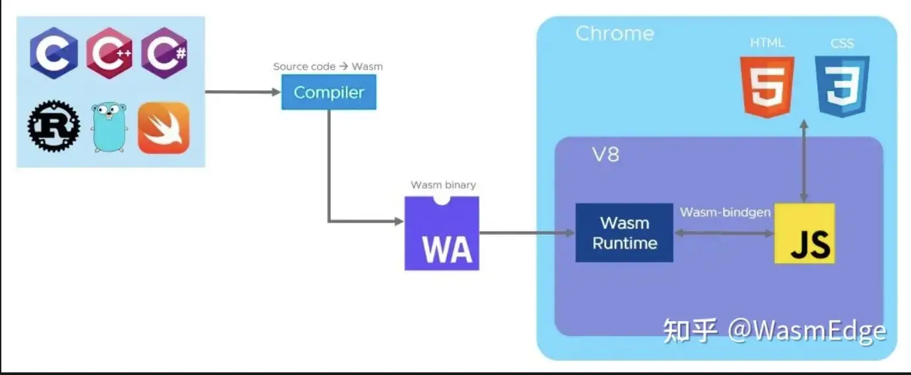
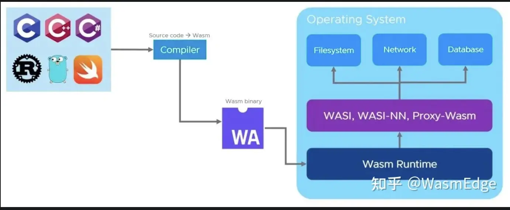
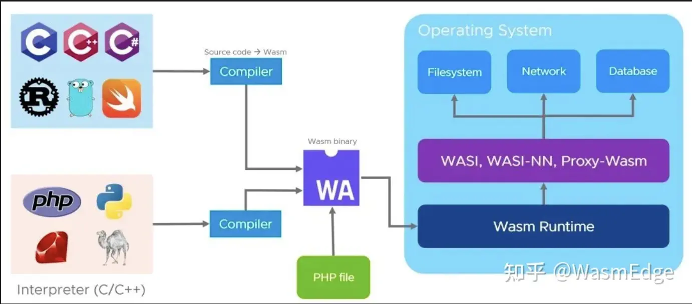
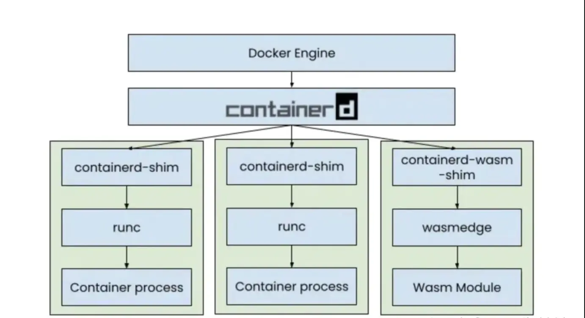
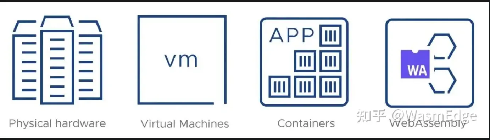

WebAssembly
AI 导读一分钟导读，先掌握全文主干。
核心观点
- Wasm 是什么、能在浏览器跑什么（C/Rust 编译）
- 通过 JS 调用 Wasm 函数与内存共享
- 2024-2026 生态更新：组件模型与工具链进展
关键结论与取舍
- 把计算密集逻辑搬进 Wasm 是当前最实际的收益点
- 小模块用 wasm-pack 起步最顺
官方网站
WebAssembly，通常简称为 Wasm，是一种相对较新的技术，它允许你编译用 40 多种语言（包括 Rust、C、C++、JavaScript 和 Golang）编写的应用程序代码，并在沙盒环境中运行它。最初的用例主要是在 Web 浏览器中运行本地代码，但是由于 WebAssembly 系统接口（WASI）的存在，Wasm 正在迅速向浏览器之外扩展，
wasmedge
wasm-二进制标准格式，另一个"一次编译，到处执行"





WebAssembly 2026：Wasm 3.0 与 WASI 0.3
Wasm 3.0：memory64 与 GC（2025-10 发布）
2025-10 WebAssembly 3.0 正式发布，是两个积累多年提案的合流：
- memory64（64 位线性内存）：单个 Wasm 实例可寻址超过 4GB 内存，挣脱 32 位限制，大内存服务端与数据处理场景受益。
- GC（垃圾回收）提案：带 GC 的语言（Go、Java、C#、Kotlin）可以高效编译进 Wasm，不必再把整个运行时和标记-清除器塞进线性内存——语言生态的「一等公民」成为可能。
Wasm 3.0 = Wasm 2.0 + memory64 + GC。当时社区的评价很中肯：「组件模型还没做完」，真正的临门一脚，是 WASI 0.3。
WASI：Preview 2 到 0.3
WASI（WebAssembly System Interface）是 Wasm 在服务端运行的系统调用层。2024-2025 的主流是 WASI 0.2（Preview 2），引入 Component Model，使不同语言编译的 Wasm 模块可以互相调用：
- Component Model：跨语言 Wasm 模块互操作，共享接口定义；WASI 接口全部以 WIT 格式定义。
- WIT（Wasm Interface Type）：声明式接口定义语言。
- wasm-tools：用于组件操作的工具链。
- 接口稳定：WASI v0.2.12（2026-07-31）已稳定
wasi:http、wasi:sockets、wasi:filesystem等核心接口。
// example.wit - Wasm 接口定义
package example:greeter;
interface api {
greet: func(name: string) -> string;
}
world greeter-world {
export api;
}WASI 0.3：异步成为组件原生能力（2026-03 获批）
2026-03 WASI 小组投票批准 WASI 0.3.0，官方变更说明直白有力：「WASI 0.3 is official, and async is now native to WebAssembly Components.」2026-06-12 正式提升为 primary preview。
- 异步原生：异步不再靠宿主桥接，组件首类支持 await/并发，服务端 I/O 密集场景终于顺手。
- 资源类型（Resource Types）：引入类似 Rust
Arc的引用计数机制，资源管理更安全。 - HTTP Client/Server 标准化：支持流式响应；Socket API（TCP/UDP）标准化。
- Key-value API：原子计数器、永久存储等云原生常用能力进标准接口。
- 组件分发与容器同构：
wkg + OCI让 Wasm 组件走镜像仓库分发，与容器生态同构，降低采用门槛。
语言侧全面跟进：Rust（cargo-component）、C/C++（wasi-sdk）、Python（componentize-py）、JS/TS（jco）、Go（TinyGo + WASI）。
运行时对比（2026）
| 运行时 | 语言 | 特点 | WASI |
|---|---|---|---|
| WasmEdge | C++ | 轻量、AI 友好 | Preview 2 / 0.3 跟进 |
| Wasmtime | Rust | Bytecode Alliance 官方 | Preview 2 / 0.3 跟进 |
| Wasmer | Rust | 支持多语言 SDK | Preview 2 / 0.3 跟进 |
| WAMR | C | 嵌入式/AOT 友好（字节跳动开源） | Preview 2 跟进 |
| browser | - | 浏览器内置，随内核升级 | Preview 1 |
WASI 0.3 统一推进中，主流运行时均在其主线上跟进；浏览器侧仍是浏览器自有沙箱，不直接使用服务端 WASI。
Wasm 应用场景（2026）
- 边缘计算：Cloudflare Workers、Fastly Compute@Edge 使用 Wasm；FaaS 边缘已是 Wasm 主场。
- Serverless：轻量级冷启动（毫秒级），比容器快一个数量级；配合组件模型可声明化部署。
- 插件系统：宿主用 WIT 定义「插件能做什么」，插件是独立组件，能力可审计、语言随意。
- AI 推理：WasmEdge 支持 WASI-NN，在 Wasm 中运行 AI 模型；边缘推理 + 毫秒冷启动组合成型。
- 云原生中间件：WASI 0.3 的异步与 key-value API 让 sidecar/网格类中间件开始尝试 Wasm 化。